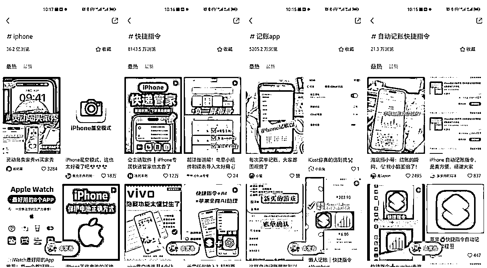
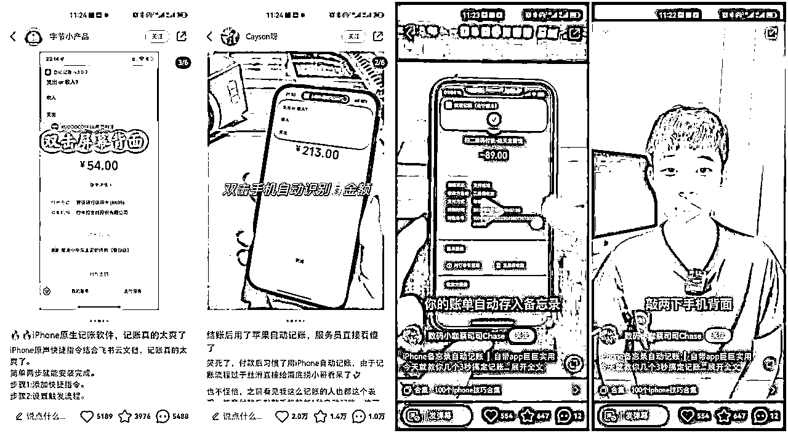
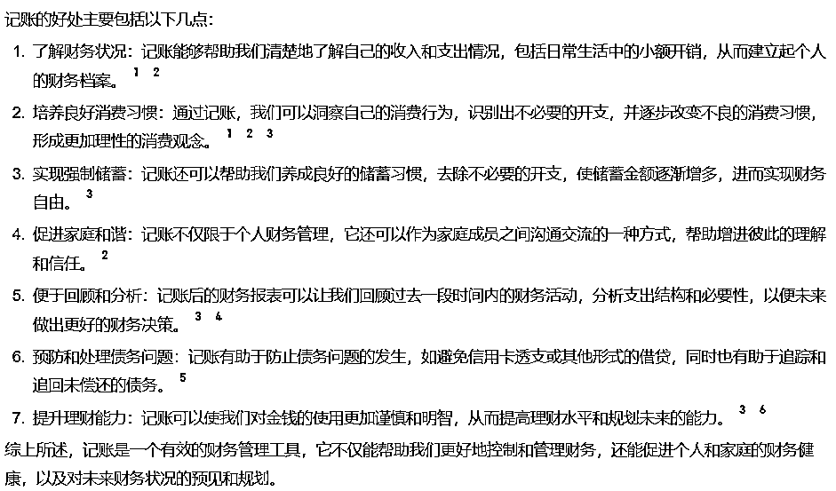
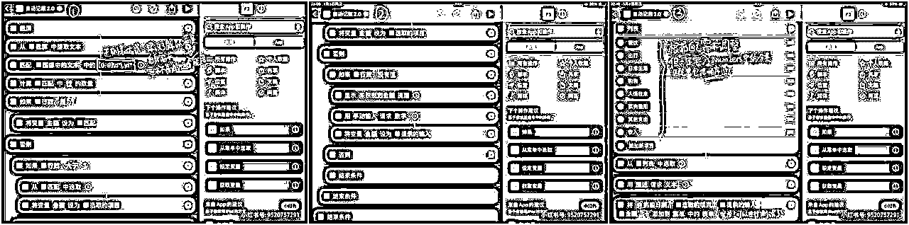
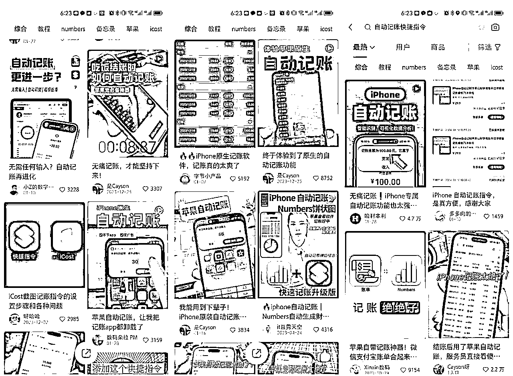

来源：https://uyti92rt4m.feishu.cn/docx/FP8GdatF1o6tBXxGxEXc68pPnRf
一个自动记账的快捷指令，在小红书变现近2万。
这是一个很有意思的场景，苹果自带的快捷指令，开发起来基本0成本，而大量的人却为它买单，本质上，这是因为满足了一类人群的需求。
也就是说，只要找到类似的小众但精准的需求，你也可以大赚一笔。因为现在工具开发其实非常简单，不管是苹果的快捷指令，还是现在很火的RPA，又或是利用AI做编程，只要稍微花一些时间学习，就能掌握。
所以，这个机会拆解的关键点，在于我们怎么找到这部分，有需求的人群。比如通过小红书发帖征集意见，拿到实时反馈；比如潜入软件群，去找到那些愿意付费的需求；又或者关注自己的生活，觉察自己的痛点。相信通过这次拆解，你会找到那些你根本想不到，却真真实实存在的有价值的需求。
自动记账快捷指令，通过字面意思理解，可以分为两个部分，一个是自动记账，一个是快捷指令。



1.创建excel文档，设置好相关参数（可以使用飞书、Numbers表格等）
2.创建快捷指令

3.在设置中打开辅助功能-触控-轻点两下-选择快捷指令
4.拍摄视频或制作图文（这个真的绝了、iPhone自动记账、记账绝绝子、苹果原生）
5.引导用户下单
6.做好售后服务
通过购买他人已经制作好的自动记账快捷指令，对其进行优化，然后上架到自己的店铺，进行引流转化
目前自动记账快捷指令主要在小红书销售比较多，主要以图文形式为主。

总结：只需要做好流量，一本万利
从自身出发，在看到这个选题的时候，我毫不犹豫就选择了这个选题，原因就是我自己也有这方面的需求，我自己想要记账，想要有好的记账软件、记账方式。
在生财的圈友无疑是对当下的一些平台、热榜了解最多的，在生财中我们经常能看到各种商业信息。风向标、中标、精华帖、项目拆解等等。有意义的信息背后都是一个个痛点、需求点。
我觉得可以做私域。通过引导用户关注＋v，引流到私域。
以上就是我对这个项目粗浅的拆解，谢谢大家的浏览！！！